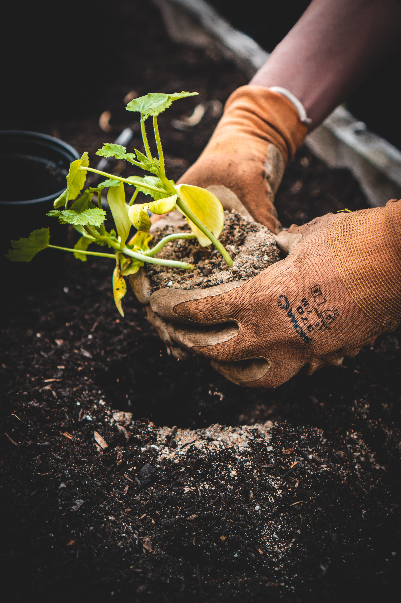

¿Qué cuidados necesitan el césped y las plantas?

Qué se debe tener en cuenta al diseñar o rediseñar un espacio verde?

¿Con respecto al césped, conviene sembrar o colocar césped en rollos?

Realiza tu consulta de forma gratuita!